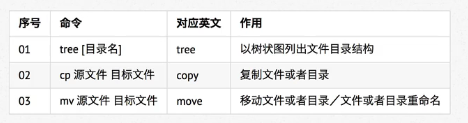

touch和mkdir
touch创建文件或修改文件时间，如果存在，则修改时间
mkdir -p 可以递归创建目录
注：新建目录的名称 不能与当前目录中 已有的目录或文件 同名
rm（删除后不能恢复）
-f：强制删除，忽略不存在的文件，无需提示
-r：递归地删除目录下的内容，删除文件夹时必须加此参数
rm 可以使用通配符
拷贝和移动文件

tree -d ：只显示目录
tree
tree ~
cp:
-i：覆盖文件前提示
-r：若给出的源文件是目录文件，则cp将递归赋值目录下的所有子目录和文件，
目标文件必须为一个目录名
cp ~/a/123.txt ./123.txt
cp ~/a/123.txt .
mv：
除了移动文件和目录外，也可以重命名
mv read.txt 123.txt
-i
-r
查看文件内容

cat：
-b：对非空输出行编号
-n：对输出的所有行编号
more：
分屏显示文件内容，每次只显示一页内容，适合查看内容较多的文本文件

gred：
一种强大的文本搜索工具
gred hello 123.txt
gred "hello world" 123.txt
gred -n a$ 123.txt

echo和重定位
epoch：
会在终端中显示参数指定的文字，通常和重定向联合使用
echo Hello
重定向>和>>:
Linux允许将命令执行结果重定向到一个文件
将本应显示在终端上的内容 输出/追加 到指定文件夹中
>表示输出，会覆盖文件原有的内容
>>表示追加，会将内容追加到已有文件的末尾
echo Hello > a 将Hello写入到a文件中
ls -lh > a
管道 |
Linux允许将一个命令的输出可以通过管道作为另一个命令的输入
more
gred
ls -lha ~ | more 查看ls -lha的结果
ls -lha ~ | grep Do